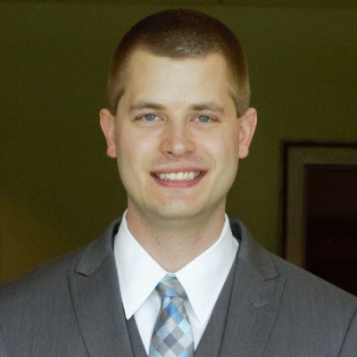

01 / Build
Hands-on engineering
I work across hardware, firmware, and software, grounded in experience with embedded systems and camera and motion products.
I’m Justin VanTassel.
Research and Development Engineering Assistant Manager at Toyota Material Handling North America.
I bring hardware, software, and engineering teams together to take on new challenges—from embedded products to warehouse operator-assist technologies.

I work across hardware, firmware, and software, grounded in experience with embedded systems and camera and motion products.
I help define requirements, evaluate technologies, and support architecture development with internal teams and third-party vendors.
I’ve led technology evaluation efforts and managed software teams developing operator-assist technologies for warehouse environments.
I’ve helped evaluate pallet perception technologies against global requirements and led an ADAS software team focused on reinforcing operator training and improving efficiency.
See my work highlights →I earned my M.S. in Electrical Engineering and B.S. in Computer Engineering at Binghamton University.
More about my background →Interested in my work or engineering background? Find me on LinkedIn.
Start a conversation →